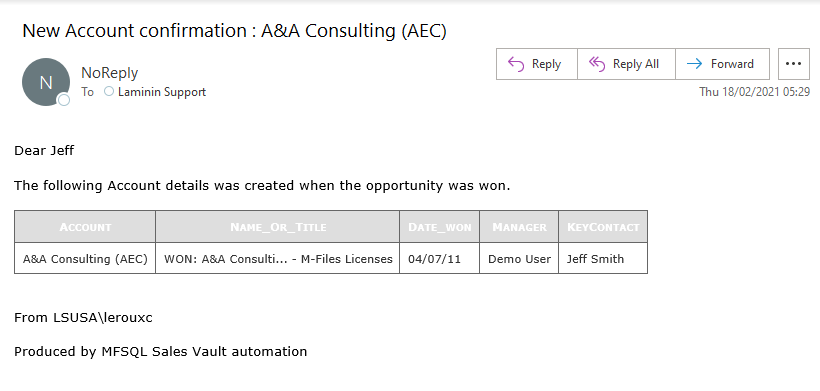

Send Bulk Email¶
Version 4.9.26.67 introduced a structured approach to send bulk emails using email templates. This allows to use data from M-Files to orchestrate sending out automatic or on demand emails using msdb database mail.
This section describe how to the setup, configuration and execution of sending emails to recipients using a email template and sending it through SQL Database mail fits together. This feature goes beyond the scope of standard M-Files notifications. It allows for using different templates for different notifications, including place holders and the ability to include a tables. Any recipients can be included, not only users in M-Files.
Example of notification with a table 
Components¶
- The capability has the following Components:
MFEmailLog to track the sending of email
MFEmailTemplate for defining each template
spMFConvertTableToHtml to convert a select statement output to HTML format
spMFSendHTMLBodyEmail to sent email out.
Use case¶
- This feature has many potential use cases, including, but not limited to
Send notification to all customers / suppliers
Send notification to a specific customer when the order was approved
Send notification to the supervisor when all the steps in a process is completed, including a table with delay times
Send invoice link (public link) to customer on completion of the invoice
Send notification to the controller when a new account is created in ERP when an opportunity is won. (this example is modelled in the MFSQL Sales Demo)
The code examples below is based on a use case of sending an email to the controller when a new account was created by M-Files in ERP
Configuration¶
- The following steps is required to prepare the environment
Create class tables for objects that would have the recipient email address and the triggering event to send the emails. The trigger will be on the opportunity class when a certain state is reached. The account class will also be used.
Configure the triggering event in M-Files. This may be the value of a certain property or lookup, a workflow state, or a event handler such as on check in. Triggering the event may involve the use of Context Menu functionality. It would be helpful to create a custom lookup with spMFCreateValueListLookupView if a valuelist is used. In the configuration example, then the state is ‘won’ on the opportunity, it would send and email to the controller with the details of the new opportunity and account that was created in ERP.
Design the Email Template
Insert Template into configuration table
Prepare a Custom procedure for processing
Testing the procedure
Staging the notification using the trigger
Email Template¶
Design the email template format by adding a row and columns in MFEmailTemplate for the elements of the email for a each email template. We recommend to prepare the email body in notepad or another scripting tool using html formatting and test the email body using a browser.
- The various sections of the email are then inserted into the table using the following sample insert statement. Replace the sample date with your specific data. Take into account:
each template must have a unique name
each row represent a specific template
each template has a one to one correlation with the valuelist item in ‘Channel’. The valuelist item is added in the channel column
fromEmail and CCemail can include multiple addressed delimited by ‘;’
add the select statement for the table to be included as the tablescript column. Note that this script must include an insert into ##report. The script should have the format ‘Select col1, col2 into ##report from table where objid = @Document_ID’
Add the subject for the email.
Add the Email Profile to be used for the template. If null or invalid the default EmailProfile in MFSettings will be used.
The head, greeting, mainbody, signature and footer must be include html tags
Three placeholders can be used optionally. firstname, user and head. {head}, {firstname], {user}. Note that placeholders are case sensitive.
if the {head} placeholder is included then the default CSS from MFSettings will be used
use the {table} placeholder to position the table (if required) in the body.
additional placeholders can be customised by addding a placeholder in the table and modifying the custom procedure to replace the text for each email.
the email can include a table. The select statement for the table is included in the Email template.
Insert Template¶
Insert a record in MFEmailTemplate for each template.
INSERT INTO MFEmailTemplate
(
Template_Name,
Channel,
FromEmail,
CCEmail,
TableScript,
Subject,
EmailProfile,
Head_HTML,
Greeting_HTML,
MainBody_HTML,
Signature_HTML,
Footer_HTML
)
VALUES
( 'DemoEmail',
'Telefone',
'noreply@lamininsolutions.com',
'support@lamininsolutions.com',
'Select * from MFclass where mfid = @Objid',
'Test',
Null,
'{Head}',
'<BR><p>Dear {firstName}</p>',
'<BR><p>this is test email<BR>{table}</p>',
'<BR><BR><p>From {user}</p>',
'<BR><p>Produced by MFSQL Mailing system</p>'
)
To review table
SELECT * FROM dbo.MFEmailTemplate AS et
To remove a template
DELETE FROM MFEmailTemplate where template_Name = 'DemoEmail'
Custom procedure for processing¶
- The components is tied together with a custom procedure to stage and process the individual objects to be used in the email. This custom procedure will handle:
refresh dependent class table
get the template configuration from MFEmailTemplate
replace the place placeholders
get the table to be added in the email (optional)
loop through all the recipients
insert the table using spMFConvertTableToHtml
compile the email
send the email using spMFSendHTMLBodyEmail
updating MFemailLog
Error trapping, debugging and logging
- The elements of the custom procedure is likely to include the following:
Parameters to include: Template_ID, TestEmail, IncludeTable, Debug. If the custom procedure is used with the Context menu then it should include additional parameters described in Using the Context Menu
Refresh dependent class table to ensure that the latest object information is used. If Context Menu with object sensitivity is used then the refresh can be minimised by only updating the underlying object.
Variables to include : Trigger element, RecipientEmail, object id, looping id
Temporary table ##report is created by the tablescript based on the ObjidID parameter
Sub process to get value of trigger element (e.g. EmailChannel in the example)
Sub process to insert values into temporary table
An example of a custom procedure is available in the example scripts : C:\Program Files (x86)\Laminin Solutions\MFSQL Connector Release 4\[Your database]\Example Scripts\90.107.Custom.DoAccountConfirmationEmail.sql
Testing¶
Take care when testing the procedure to not send test emails to all the recipients. Use the TestOnly parameter to test and debug the custom procedure. This will block sending emails to all the recipients and only send one email to the TestEmail in the procedure.
exec Custom.DoAccountConfirmationEmail @Template_ID = 8, @TestOnly = 1,@Objid = 94, @IncludeTable = 1, @Debug = 1
To send to all recipients
exec Custom.DoAccountConfirmationEmail @Template_ID = 8, @TestOnly = 0,@Objid = 94, @IncludeTable = 1
show the processing log
Select * from MFEmailLog
The custom procedure is designed to block the sending of repeat emails for the same template to the same recipient. It may be necessary to release this block and resend an email to a recipient. Delete the row in MFEmailog to this end.
delete from custom.emaillog where document_id = 212326
Staging¶
- The final step is to stage the event that will trigger the notification. This would depend on the use case but could include:
Process notifications daily in bulk based on the conditional value in a property or valuelist item. This is likely to use an agent to call the custom procedure.
Process the notification when the object changes in M-Files. This is likely to involve the deployment of the context menu functionality
Execute the procedure in SSMS. This is likely to apply where the sending of emails is not systemised and repetitive.